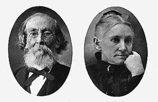

163
ALEXANDER SMOOT5
AND
HIS DESCENDANTS
Alexander Smoot, son of John, was born August 1, 1769, in St. Mary's County, Maryland, where he was domiciled as the head of his household at the 1790 census, unmarried, with two slaves. Shortly after that year he migrated to Culpeper County, Virginia, then a county containing much unpatented land, and joined some of his brothers and nephews who had already settled there. On October 17, 1798, at the county seat he secured license to marry Anne (Jones) Hawkins, a widow with young children.
Children of Alexander and Anne (Jones) Smoot
1. Thomas Smoot married ------ Holman. q.v.
2. Alexander Smoot married Temperance Neely. q.v.
3. Elizabeth Smoot, born Feb. 18, 1805.
Alexander Smoot with his young family including his step-children migrated about 1806 to Rowan County, North Carolina, and established his seat on land which had formerly been owned by the parents of Daniel Boone. On January 12, 1807, he purchased from Frederick Thompson for £400 land on Bear Creek, being a portion of a tract granted to a "certain Esquire Boon by the Lord Earl Granville". The conveyance was witnessed by William Nelson and William Smoot. On August 22, 1818, he instituted action against Thomas Ray for the erection of a mill on Bear Creek which flooded portions of his estate or as he stated in the petition "drowned my land".
The will of Alexander Smoot was dated November 26, 1816, and proved at the February court of 1826 in Rowan County, North Carolina, by Littleberry R. Rose and William Nelson. He bequeathed his step- daughter Sally Allen $50 which was her "full share" of her father's estate, likewise he bequeathed similar amounts to the other step-children--Polly, wife of Brice W. Ijams;1 John Hawkins; and William Hawkins.
He devised his widow Nancy 200 acres of land, negroes, and all other personal property during life which at her death were to be divided between his two sons--Thomas and Alexander. Both sons received direct 200 acres of land between them. He willed his daughter Elizabeth
______________
1 For the Ijams family, see "Anne Arundel Gentry", by Newman.
164
certain negroes. A codicil of December 3, 1825, directed that 16 negroes be divided among his three children.
It is believed that he was interred in the burying ground of the old Presbyterian church once known as Joppa, lying about a mile north of the present town of Mocksville, where the parents of Daniel Boone and other early citizens were buried.2
Thomas Smoot6
(1799 - 18--)
Thomas Smoot, son of Alexander and Anne (Jones) Smoot, was born August 31, 1799, in Culpeper County, Virginia. He migrated to North Carolina with his parents and there he married a daughter of Jacob Holman, of Rowan County. According to family tradition two children were born--Mary and John.
On May 8, 1837, Thomas Smoot bought land lying on Dutchman's Creek in Davie County from William Hawkins. On March 28, 1843, he sold to Isaac Holman this land on Dutchman's Creek on which stood a saw and grist mill, his interest "being one-half subject to the dower of Catherine Linn, widow of John Linn". The deed was proved by Burgess Gaither and C. Hardin.
On August 28, 1855, John A. Smoot, his son, conveyed to Isaac Holman for $50 "one-sixteenth portion of his grandfather's Jacob Holman undivided land". The deed was witnessed by Asberry Gaither. It is said that he is buried at Olive Branch Farm, near Farmington, North Carolina.
Alexander Smoot6
(1801 - 1839)
Alexander Smoot, son of Alexander and Anne (Jones) Smoot, was born October 18, 1801, in Culpeper County, Virginia. He migrated with his parents to Rowan County, North Carolina, and there about 1827 he married Temperance, born May 22, 1810, daughter of Francis and Mary (Holman) Neely.
It was traditional that the Neelys were from Ireland, however, Richard Neely and his family landed about 1760, supposedly at Philadelphia, where his ill wife, Mary Elizabeth Duncan, was transported to Rowan County, North Carolina, upon a litter suspended between two horses. In 1782 Richard Neely was granted by the State 637 acres of land lying
______________
2 If anyone knows of the final resting place of Alexander Smoot Sr. and his wife, Dr. J. Edward Smoot, of Concord, N. C., a descendant, would like to be advised.
165
on Hunting Creek, where he ultimately constructed a substantial log house on the south bank about three miles above its confluence with the South Yadkin River and about one mile, as the crow flies, from the present day Byerly's Chapel and graveyard. Today may be seen a large pile of rough stones which once formed the chimney and foundation, and nearby still flows a rock-bottomed spring which no doubt furnished drinking water to the plantation.
Of several children born to Richard Neely and Mary Elizabeth his wife, Francis was probably their eldest child who distinguished himself during the Revolutionary War. As a youth he served in the Continental Army in the capacity of wagoner, especially in comradeship with his friend ------- Guffy in collecting horses for the Army.
In 1781 following the American victory at Cowpens, Generals Greene and Morgan considered it inexpedient to meet Lord Cornwallis so consequently they marched northward with the British in hot pursuit. On reaching the Yadkin River at Trading Ford, several miles below the present town of Spencer, Greene and Morgan rushed across the Yadkin after which the river on account of recent rains rose to such a height that it became impossible for the British Army to ford it. A small detachment of the Continental forces, however, was left behind on the south bank of the Yadkin to guard some wagons and stores. Around midnight the advance guard of the British Army under General O'Hara and Colonel Tarleton reached the Yadkin and located the small American force, but believing it to be the main Continental Army, the British quickly retired to Salisbury where they encamped for a few days. In the meanwhile the Americans in some manner crossed the swollen river, and found themselves at the plantation of Richard Neely, cold, wet, and hungry. Here they were furnished a wagon filled with supplies of foodstuffs, home-woven jeans, and according to family tradition hometailored pants.
Ultimately when the advance guard of the British Army reached Renshaw's Ford, they found Francis Neely, a youth of twenty years, and his comrade Guffy with a drove of seventeen horses which they had collected for the Continental forces. The British fired upon them and mortally wounded Guffy, but Neely escaped unharmed, and knowing the country he escaped into canebrakes and the river jungles and hid until darkness. That night he swam the Yadkin and reached his home on Hunting Creek in safety.
For the patriotic services of Francis Neely during the Revolution, he was awarded by various accounts currency in the excess of £150.3
______________
3 North Carolina Historical Commission, Raleigh.
166
He later served as a magistrate of the District Court of Rowan County, and was active in this capacity during the War of 1812. He died in North Carolina, and was buried at what was formerly called the Van Eaton graveyard, now known as Byerly's Chapel.
By his will dated November 10, 1828, he bequeathed to his daughter, Temperance Smoot, "Harden Orton" and "Beard's Place", containing 600 acres on the north side of the South Yadkin River adjacent to the lands of Samuel Thomas.
Children of Alexander and Temperance (Neely) Smoot
1. Alexander Neely Smoot married Sarah ------. q.v.
2. James Franklin Smoot married Virginia Brittingham. q.v.
3. Ann Elizabeth Smoot, born Jan. 9, 1832, died circa 1868, married John W. Turner, C. S. A., License May 30, 1855, Davie Co. Issues: Mary Elizabeth; Laura; Alexander Smoot; and Joseph. 4. Nathan Smoot married Lou Cheshire. q.v.
5. Rebecca Providence Smoot, born Mar. 22, 1837, died Aug. 18, 1890, married William Monroe Dayvault. License Oct. 9, 1854, Davie Co. Issues: David Patton, born July 5, 1857; Alexander Smoot, born Jan. 2, 1860; Virginia Temperance, born Jan. 9, 1862; Lelia Elizabeth, born July 16, 1866; James Franklin, born Oct. 20, 1868; Meek Anne, born Nov. 25, 1871; William Arthur, born 25, 1874; Mary Rebecca, born June 12, 1876; and Andrew Jackson, born Jan. 6, 1879.
6. Mary Smoot, born Oct. 31, 1840, died Apr. 10, 1911, married Sanford Henley. Issues: Alexander Smoot; John Chillian; Joseph Hawkins; Pearl; and Francis.
In his early life Alexander Smoot was by profession a cabinet maker, which it is believed was taught him by his father. Some of his handicraft is still in the possession of his descendants, which show that he was not only a cabinet maker but a wood carver as well--especially the delicately carved hair on lion's feet supporting the superimposed pieces of his workmanship. Later he devoted his life to that of a merchant and planter at a place still remembered as County Line located on the line separating what was then Rowan (now Davie) County from Iredell.
Shortly after his marriage Alexander Smoot constructed on the land which he had inherited from his father-in-law on the north side of the South Yadkin River, a spacious and quaint log house about three miles from County Line. This house was originally built for the temporary use of him and his family until he was able to erect a large, manorial-like brick dwelling like his forefathers had built in old Maryland. The then log house was to be used as a dormitory for the slaves, but an early death prevented this vision from materialization.
167
At one end of the log house was a tall chimney of brick, and in front was a large front porch with stone steps, capped with halves of discarded circular stones which had been used formerly to crush fruits in making brandy. Nearby was the smoke house, granary, and apple house. The grounds were noted for the old towering elms, while at the foot of the hill, surrounded by giant oaks, was the spring-house. In the northwest corner of the garden grew the largest apple tree known to the countryside which had sprung from a seed planted by Temperance from some fall or winter apples which Alexander had brought home. Instead of bearing fall apples, as expected, it was a profuse bearer of midsummer fruit of the so- called sheep-nose variety.
With the aid of a large number of slaves, Alexander Smoot bridged the South Yadkin and cultivated his extensive plantation which lay on both sides of the river. He fenced his broad fields with many thousands of oak rails, built into zig-zag style ten rails high, and above which was added an eleventh rail placed into the crotches of the stakes crossed like the letter X, and which was called the rider rail to prevent jumping stock from disregarding the barriers between green pastures and fields of grain.
In May 1829, Alexander Smoot purchased 200 acres of land from Caswell Harbin and his wife. On August 14, 1830, he and his wife Temperance conveyed to Arthur Neely 36 acres of land, being their share of the landed estate of Nathan Neely, deceased. During the same month he was named by the court guardian to Columbus Price, the son of William. In February 1831, he sold land on Third Creek to Robert N. Fleming, and in May of the same year, when he made another conveyance he declared in court that his wife was "not capable of coming to court."
On January 21, 1834, he deeded land to the trustees of the Methodist Episcopal Church for the erection of a "house of worship", receiving one dollar in hand to consummate the transaction. Upon the land was built a spacious edifice of large hewn logs, weather-boarded outside and finished inside. From the three doors on three sides of the building led aisles that crossed in front of an old-time high-box pulpit. From the ground floor led two stairways to a gallery for the slaves who always accompanied their masters and mistresses to services. The old edifice can now be considered a memorial to Alexander Smoot, where a monument has been erected to his memory, on which are chiseled the names of the first Board of Trustees.
Early in the spring of 1840 Alexander Smoot went on a business trip to Illinois in the covered wagon of that day, and returned with a heavy
168
cold which deepened into pneumonia. He closed his eyes to the scenes of this earth and was interred in the churchyard of the South River Church, two miles from his home on the south bank of the South Yadkin.
Temperance Smoot survived her husband many years, raising her young children to manhood, and died on June 21, 1897. Her will was dated May 21, 1887, and proved in Davie County during July 1897. She willed her daughter Mary Henley the home plantation on which she was living, on the north side of the South Yadkin River, adjoining the land of John Turner and W. S. Smoot, the tract containing 244 acres. To her daughter Rebecca Dayvault she devised land on the south side of the Yadkin River in Rowan County, consisting of 150 acres, adjacent to J. F. Smoot and others. She mentioned her sons James F. and W. S. Smoot. Bequests were also made to the heirs of her sons A. N. Smoot and Nathan Smoot, and to the following grandchildren---Mary Micenhammer, Laura R. Shoaf, Alexander S. Turner, and Joseph F. Turner.
Alexander Neely Smoot, C. S. A.7 (1828 - 186-)
Alexander Neely Smoot, son of Alexander and Temperance (Neely) Smoot, was born December 27, 1828, in Rowan County, North Carolina. He migrated to Arkansas, where he married Sarah ------. During the Civil War he served in Company I, 27th Regiment of Arkansas Infantry, and either died or was killed in service. None of his children ever visited their father's birthplace, but a son John, a very handsome youth, about 1880 send his photograph to his paternal grandmother.
Rev. James Franklin Smoot7
(1831 - 1904)
James Franklin Smoot, son of Alexander and Temperance (Neely) Smoot, was born March 13, 1813, in that part of Rowan County which in 1836 became Davie County, North Carolina. He became a minister of the Methodist Church South and held charges in his native State. His wife was Virginia, born September 18, 1838, at Portsmouth, Virginia, the daughter of William Powell and Martha (Smith) Brittingham. His Bible reads that the marriage occurred January 3, 1861, "rites of matrimony solemnized by the Rev. P. A. Peterson, of the Virginia Conference". Her father died in 1855 during the yellow fever epidemic of Norfolk.

Rev. James Smoot . . . and His Wife Virginia Brittingham
169
Children of James and Virginia (Brittingham) Smoot
1. Alexander Lee Smoot married Daisy Meroney Hodgins. q.v.
2. William Brittingham Smoot married Eva Cheatham. q.v.
3. James Edward Smoot married Minnie May Watson. q.v.
4. Frank Neely Smoot, born Aug. 26, 1869, d.s.p. Feb. 10, 1895.
5. Marvin LeRoy Smoot married Margaret Giddens. q.v.
6. Cora Virginia Smoot, born Oct. 24, 1880, died spinster June 9, 1923.
His wife died July 7, 1901, at Salisbury, and was buried at the South River Church. Her tomb reads "For forty years the faithful wife of an itinerant preacher. A loving disposition, a cheerful nature, a devoted wife and mother--hath left an inheritance upon the earth, the good effects of which can only be determined by eternity".
His death occurred November 3, 1904, at Concord, and his remains were interred at South River Church, the shrine of his ancestors. The following inscription appears on his tombstone--"An active member of the North Carolina Conference of the Methodist Episcopal Church, South, from 1856 to 1876, after which time a faithful local preacher till the end". The Salisbury Post stated that "no task too hard, no burden too heavy, no sacrifice too great . . . that is the record of this great old man who fell on sleep this morning".
Nathan Smoot, C. S. A.7 Nathan Smoot, son of Alexander and Temperance (Neely) Smoot, was born March 24, 1835, in old Rowan County, North Carolina. His wife was Lou Cheshire.
(1835 - 1863)
Children of Nathan and Lou (Cheshire) Smoot
1. Neely Smoot.
2. Walter Smoot, born 1857, married Maggie Steel, born 1867. License Davie Co., N. C., Nov. 1, 1893.
3. Mattie Smoot, born 1862, married Henry Dwiggins, born 1859. License Davie Co., N. C., Jan. 8, 1880.
At the beginning of the War Between the States, Nathan Smoot enlisted in Company G, Seventh Confederate Cavalry, Claiborne's Regiment, Partisian Rangers. He was received at the hospital at Goldsboro, North Carolina, on September 14, 1863, where he died shortly afterwards of "disease", according to the records of the Adjutant General's Office. His brother, James, brought his remains to his home, where they were buried at the South River Churchyard.
170
Alexander Lee Smoot8 Alexander Lee Smoot, son of James Franklin and Virginia (Brittingham) Smoot, was born February 17, 1864, at Jonesville, North Carolina. In his early life he taught school at Salado, Texas. He married Mrs. Daisy Meroney Hodgins, of Salisbury, by whom one son was born---Alexander Lee II. He was for many years the Register of Deeds for Rowan County, and one-time Mayor of Salisbury. At present he maintains a realty and insurance office at Salisbury.
William Brittingham Smoot8
(1865 - 1911)Wiliam Brittingham Smoot, was born November 4, 1865, in Jonesville, North Carolina, the son of James Franklin and Virginia (Brittingham) Smoot. For many years he was manager of the mercantile firm of Smoot Bros. & Rogers, of Salisbury, but because of ill health he retired from business, studied law, and was graduated from the University of North Carolina. He practiced his profession at Salisbury until a few days before his death, which occurred in New York City at a private nursing home on June 23, 1911, as a result of a surgical operation. He was survived by his widow, who was formerly Eva Cheatham, of Oxford, and two children-- one of whom was William Jr., now of Arizona.
Dr. James Edward Smoot8 James Edward Smoot, son of James Franklin and Virginia (Brittingham) Smoot, was born January 1, 1868, at the old log house on the South Yadkin River during the midst of a bleak snowstorm. In 1893 he was graduated from the Baltimore Medical College, of Baltimore, Maryland, and practiced his profession until 1920 when he retired from active service. Since his retirement he has engaged in historical research and is the author of several well-known publications. In 1929 after exhaustive research he published "Marshal Ney Before and After Execution" which has been favorably received by critics at home and abroad. His next publication will be the "History of Cabarrus County, North Carolina".
On December 12, 1894, he married Minnie May Watson, of Salisbury, by whom four children were born--James Watson; Virginia Lawrence; Annis Brittingham who married Robert Lynn Trout and have Annis and Brittingham; and Mary Donnell who married Thomas Green Croom.
171
It is interesting to note that his son, James Watson, while he was attending Trinity College at Durham, about 1916 spent the Christmas holidays at the home of his college-mate, Clinton Smoot, in Alexandria, Virginia. At this occasion he met a great many of his distant cousins, one of whom was the very aged grandmother who said that when she was a girl she had a sweetheart by the name of Alexander Smoot who moved south.
James Watson Smoot9 James Watson Smoot, only son of Dr. James Edward Smoot and Minnie May Watson his wife, was born in North Carolina and received his education at Trinity College (now Duke University), at Durham. During the World War he served as 2nd Lieutenant of the 324th United States Infantry, 81st Division, A. E. F. He married Catherine Cobb, of Norfolk, Virginia.
Dr. Marvin Le Roy Smoot8 Marvin Le Roy Smoot, son of James Franklin and Virginia (Brittingham) Smoot, was born August 24, 1876, at Cool Springs, North Carolina. He married Margaret Giddens, of Goldsboro, by whom two children were born--Margaret and Marvin Le Roy II. He was graduated from the University College of Medicine at Richmond, and for a few years he successfully practiced his profession in Salisbury and Spencer. He later specialized in the diseases of the eye, ear, and throat with his college mate Dr. James M. Lilly. He died at Fayetteville, North Carolina, on February 6, 1923, where he is interred.
(1876 - 1923)
Rev. Thomas Arthur Smoot8 Thomas Arthur Smoot, son of James Franklin and Virginia (Brittingham) Smoot, was born March 8, 1871, in Olin, North Carolina. He married Leila Gilchrist McGirt, of Wilmington, North Carolina. Three children have been born--Thomas Arthur; Edward Brittingham; and Mary Lily. He was graduated from Trinity College, North Carolina, entered the ministry of the Methodist Episcopal Church, South, and at present (1936) is the pastor of the Epworth Church at Norfolk, Virginia.
Book Home Page Book Search Smoot &c Home Page
Intro. pp 1-6 pp 7-26 pp 27-49 pp 50-53 pp 54-55 pp 56-81 pp 82-105 pp 106-122 pp 123-128 pp 129-131 pp 132-140 pp 141-148 pp 149-150 p 151 pp 152-162 pp 172-184 pp 185-195 pp 196-204 pp 205-218
"The Smoots of Maryland and Virginia" by Harry Wright Newman, originally published privately in Washington D.C. in 1936. This edition edited and published by Frederick K. Smoot and the Smoot Family Association, copyright 2001.
You are Our Reader Since 16 February 2001
Last updated
Please Email Additions and/or Corrections to Webmaster